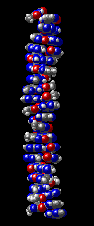

DNA Structure Activity
Problem 9: Location of GC and AT base pairs in DNA double helix
You have just created a view that shows only the bases of the A-T and G-C base pairs . How are the bases oriented in the DNA structure? The planar bases:
Tutorial
|  |
The view you created for this question should resemble the picture to the left, which shows DNA after the sugar-phosphate backbone has been hidden. Note how this view resembles slices of bread stacked on top of each other. The bases of the G-C and A-T base pairs of DNA are planar, and are able to stack atop each other. Base stacking promotes hydrophobic interactions between the non-polar portions of the bases, stabilizing the DNA helical structure. The helix axis runs directly through the middle of the stacked bases, and the bases are oriented perpendicular to the helix axis. |


University of Arizona
Modified: May 27, 1997
Contact the Development Team
http://biology.arizona.edu
All contents copyright © 1997. All rights reserved.